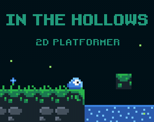

Code
If you prefer you can also browse the repositories on github.
Text detection and reading
Detect and read handwritten text on pages
Handwritten words are detected, clustered into lines and read. |
Demo: Text Reader in the Browser
Demo of a text reader for handwritten words running in the browser. |
Handwritten text recognition model
A neural network which recognizes the text in images of words. The network consists of CNN, RNN and CTC layers and is implemented with TensorFlow. The network is kept small (outputs a sequence of at most 32 characters). |
Deslanting algorithm
This algorithm deslants the text in an image, i.e. it sets the text upright. It can be used to remove cursive writing style from handwritten text. Three implementations provided: Python, C++ and OpenCL. |
CTC decoder
Some well-known CTC decoders implemented in Python: best path decoding, prefix search decoding, beam search decoding, token passing and lexicon search. Additionally, the CTC loss function is included. |
CTC word beam search decoder
A CTC decoding algorithm which uses a dictionary to constrain recognized words, but at the same time allows arbitrary character strings (e.g. numbers) between words. Results are improved compared to other decoders if a suitable dictionary and/or language model is available. Implemented in C++ with Python bindings. |
Deep-learning based word detector
A neural network based detector for handwritten words. Implemented with PyTorch. |
Classic word detector
A classic image processing based detector for handwritten words. Implemented in Python. |
Other stuff
Analyze AdaHessian
AdaHessian is a second-order optimizer for neural networks developed by Yao et al. This repository allows analyzing the optimizer on 2D functions f(x, y). |
Quasi Cauchy Optimizer
Implementation of the quasi Cauchy optimizer, an optimization method from the quasi Newton family. It uses a diagonal approximation of the Hessian and therefore has a small memory footprint. |
Fast Inverse Square Root
The repository contains a C++ function which computes an approximation of the inverse square root 1/√(x). It is based on "bit-magic" and a Newton refinement and is a simplified version of a famous hack from a 90s game. |
Separate 2D convolution kernels
Python package that splits a 2D convolution kernel into two 1D kernels, which allow for faster execution. |
A neural network in plain C++
No Python, no PyTorch, no NumPy, ... just 260 lines of plain C++ code to train, evaluate and test a simple binary classifier that distinguishes between the handwritten digits 0 and 1. |
In the HollowsSmall 2D platformer game for the TIC80 fantasy console. |
Harald Scheidl